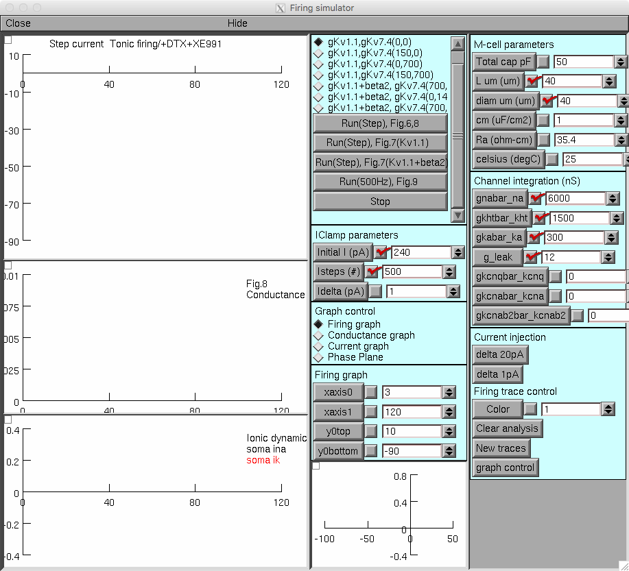
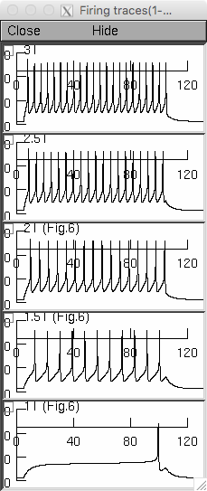

NEURON model files derived from the paper:
Takaki Watanabe, Takashi Shimazaki, Yoichi Oda (2017).
Coordinated expression of two types of low-threshold K+ channels establishes
unique single-spiking of Mauthner cells among segmentally homologous neurons
in the zebrafish hindbrain.
eNeuro 4 October 2017,ENEURO.0249-17.2017; DOI: https://doi.org/10.1523/ENEURO.0249-17.2017
The NEURON model files encode the channel generator and firing simulator for simulating development and differentiation of the Mauthner cell (M-cell) excitability. The channel generator consists of "channel generator.hoc" and "channel analysis.hoc", which enable us to generate arbitrary Na+ and K+ channels by changing parameters of a Hodgkin-Huxley model under emulation of two-electrode voltage-clamp recordings in Xenopus oocyte system for Figure 5. The code and equations of a Hodgkin-Huxley model are modified from the simulation by Rothman and Manis, 2003.
The firing simulator comprising "firing simulator.hoc", "firing analysis.hoc", "graphs panels.hoc", "neuron.hoc" and "parameters,hoc" simulates current-clamp recordings in the M-cell to generate firing pattern of the model M-cell, which are implemented with arbitrary determined basic Na+ and K+ conductances and low-threshold K+ channels Kv7.4/KCNQ4, Kv1.1 or Kv1.1 coexpressed with Kvbeta2. Default setting is step current injection for 100 ms with 1pA increment from near threshold current. The Na+ and K+ conductance and current dynamics are visualized during firing. Threshold current (1T), 1st action potential latency, number of action potentials at 1.5T and 2T, and interspike interval ratio (ISI(last)/ISI(1st)) at 2T are measured and printed. Run(step) and Run(500Hz) buttons execute firing simulation showing results for Figures 6, 7, 8 and for Figure 9, respectively.
The following .mod files are implemented in a single cylindrical compartment.
IClamp2.mod:Step current injection for current-clamp recoding. IClamp500.mod:500 Hz current injection for current-clamp recoding. kcnq.mod: a low-threshold K+ channel Kv7.4/KCNQ4 encoded in zebrafish kcnq4. kcna.mod: a low-threshold K+ channel Kv1.1 encoded in zebrafish kcna1a. kcnab2.mod: a low-threshold K+ channel Kv1.1 coexpressed with zebrafish Kvbeta2b subunit. kht.mod: a high-threshold voltage-gated K+ channel. ka.mod: an A-type voltage-gated K+ channel. na.mod: a voltage-gated Na+ channel. leak.mod: a leak (passive) channel. Example run: Auto-launch from modeldb or download and extract the mod files and start with a command like: nrngui mosinit.hoc If you need more help in starting the model on your platform please consult this web page: https://senselab.med.yale.edu/ModelDB/NEURON_DwnldGuide.cshtml You will see several windows appear, including one that looks like:  Clicking on the Run(Step), Fig 6,8 button will show a figure containing some in figure 6 in the paper: Takaki Watanabe
wtakaki@m.u-tokyo.ac.jp